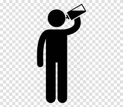

Enjoy the light refreshments offered for around 15 minutes before resuming your day.
Be sure to stay hydrated after leaving the blood donation site, with at least eight glasses of water a day.
Get plenty of rest, especially within the first four hours after donating.
Donors are discouraged from lifting heavy weights or engaging in strenuous exercise in the next six to eight hours to avoid bruising or swelling at the injection site.
Avoid strenuous physical activities such as skydiving, deep sea diving, swimming, mountain climbing or any contact sports within the first 24 hours after donating.
Avoid consuming alcoholic beverages and direct exposure to sunlight in the next 24 hours to avoid dehydration.

If you start to feel faint or experience a headache, put all activities on hold and either sit or lie down until you feel better.
If you continue to feel unwell, seek immediate medical attention at the closest health clinic or call the National Blood Centre at 03-2613 2688.